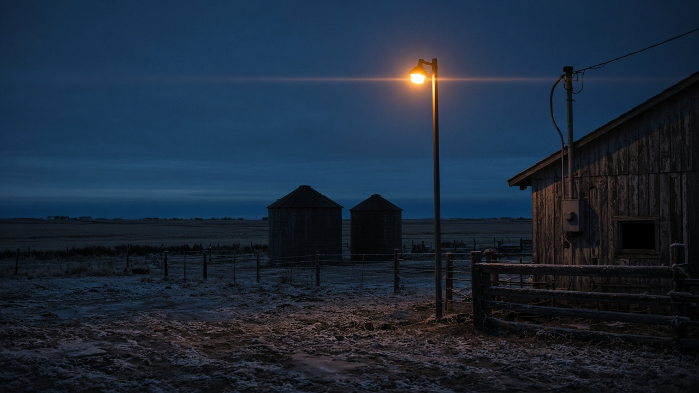
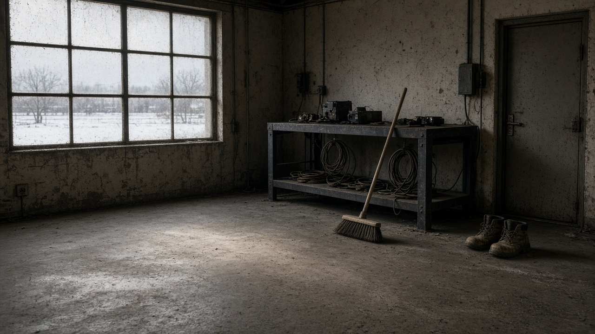

Commercial
Data. Service. Light.
Data line, service work, lighting upgrades, and commercial electrical for new construction and renovations. On-call. Free estimates. If it is a shop, office, or site trailer, start with the address and what failed.

Their line. First-year apprentice or the owner. Commercial, residential, and rural electrical in Regina and surrounding. Free estimates. On call 24 hours.
306-536-4737Atmospheric plate — prairie yard light. Not a Fresh job photograph. Named work below is text only, copied from freshelectricltd.ca.
On call 24 hours. Hours copied from freshelectricltd.ca — not a guess.
Mail is PO Box 845, Pilot Butte, SK S0G 3Z0. Work is Regina and surrounding. Desk and map.
Named work · text only
Copied from freshelectricltd.ca. Text only — they have not published job photographs of these sites. Confirm scope on the call.
Listed as one of the largest projects they have worked. A civic bowl in Regina is not a basement reno. If your site is institutional or commercial, say that first — they already publish that they take that scale.
Institutional work they name in public. New construction and renovation sit on the same Fresh page. If the job is a school, hall, or occupied building, say whether it has to stay live.
Downtown Regina. Same shop that also lists farmyard lights, trenches, and boiler upgrades. Large and small are both on the public page.
The published book
Commercial
Data line, service work, lighting upgrades, and commercial electrical for new construction and renovations. On-call. Free estimates. If it is a shop, office, or site trailer, start with the address and what failed.
Residential
Panel upgrades, basement renovations, service work, lighting upgrades, smoke detectors, and fire alarm wiring. Regina winters load old panels. Say what is tripping or what you want added.
Rural / farm
Yard light changeouts, trenching, lighting upgrades, service and troubleshooting. Mail is Pilot Butte. Name the yard and whether you can mark the trench line.
Controls
Heating and cooling including boiler upgrades. Electrical controls and troubleshooting. If a boiler or air handler is down in January, say that on the first sentence.

Before you call
The number is 306-536-4737. Give the site address, whether it is a commercial building, a house, or a farm, and what is actually down — panel, light, data, boiler, trench. “It just stopped” is enough to start.
Yes — free estimates are published on freshelectricltd.ca. Call during the shop day or after hours; they list on-call 24 hours.
They publish licensed and insured. Ask on the call if a permit or insurer needs the paper.
Work is Regina and surrounding. Mail is Pilot Butte. Name the community if you are farther out.
Reviews are not reprinted here. Named work above is copied from freshelectricltd.ca. Other people’s words stay on their public listings.
The desk
Monday–Friday 7 a.m.–5 p.m. On call 24 hours. sarah.fresh.electric@outlook.com